Synthetic user report — frictionlab-onboarding
http://127.0.0.1:8734/ · generated 2026-07-07T22:29:45.046090+00:00
Task given to users:
You want to try NimbusNotes, a note-taking app a colleague recommended. Sign up for a FREE account — you are not willing to pay or enter any payment details. You are done when you reach the welcome screen confirming your workspace is ready. Use any plausible made-up name, email and password.
You want to try NimbusNotes, a note-taking app a colleague recommended. Sign up for a FREE account — you are not willing to pay or enter any payment details. You are done when you reach the welcome screen confirming your workspace is ready. Use any plausible made-up name, email and password.
Runs
6
Success rate
83%
Completed
5
Failed
1
Gave up
0
Median steps
13.0
Friction events
24
Where users failed
| Failure point | Users |
|---|---|
| Workspace setup step - paused at the required Data Processing Agreement checkbox and did not continue to the final welcome/confirmation screen. | 1 |
Friction findings
Hesitation on /permissions.html
6 run(s) affected9 event(s)- run_000 step 9: These are optional settings I can change later... Let me scroll down to find the continue button. — Keep the primary continue/skip action visible above the fold so users don't have to scroll to find how to proceed past optional settings.
- run_001 step 8: deliberation=5s ... 'All three fields are filled in ... Everything looks correct, so I'll click "Create account"' — Provide inline confirmation (checkmarks or field validation) so the user doesn't have to pause to double-check all fields were captured before submitting.
- run_002 step 8: deliberation=7s before 'Now I'll click "Create account" to move to step 2.' — Ensure the primary CTA is visually obvious and confirm field validation state clearly so users don't pause to double-check before submitting.
- run_002 step 10: deliberation=9s; 'There's a required-looking "Data Processing Agreement" checkbox that's unchecked — I'll need to tick that to continue.' — Clearly mark required agreement checkboxes as mandatory with an explicit label/asterisk and inline validation, rather than making the user infer it's 'required-looking'.
Hidden Affordance on /done.html
4 run(s) affected4 event(s)- run_001 step 13: 'I notice some faint grey text at the bottom: "continue with the free plan for now." That's exactly what I want, even though it's easy to miss.' — Make the free-plan option a clearly visible button or high-contrast link of equal prominence, since burying it in faint grey text is a dark-pattern that risks users abandoning or accidentally selecting a paid plan.
- run_002 step 13: 'the faint grey "continue with the free plan for now" link at the bottom' — Increase contrast and prominence of the free-plan link so it meets accessibility contrast standards and is easily discoverable.
- run_003 step 15: all three are paid, with "Choose Pro" being the big prominent button... Good thing there's a low-key link at the bottom: "continue with the free plan for now." — Present the free plan as a clearly visible, equal-weight option rather than a low-key link, since the free tier is a legitimate primary path.
- run_004 step 13: 'I notice small, faint grey text at the bottom that says "continue with the free plan for now." That's exactly what I want, though it's a bit hidden.' — Make the free-plan option a clearly visible button or equally weighted choice rather than faint grey text, so users not wanting to pay can find it without hunting.
Confusion on /done.html
2 run(s) affected2 event(s)- run_002 step 13: "…bottom. That's the one I want. Slightly annoying that they've buried the free option in low-contrast text, but I'll click it."
- run_004 step 13: 'I'm being nudged toward paid plans... It even says "Every plan starts with a 14-day Pro trial," but I don't want to pay or enter payment details.' — Clarify whether the free plan requires payment details and present the free tier as a first-class option to avoid dark-pattern nudging toward paid plans.
Dead End on /done.html
2 run(s) affected2 event(s)- run_002 step 13: 'all three cards are paid plans ($8/$15/$49)... I spot the faint grey "continue with the free plan for now" link at the bottom... Slightly annoying that they've buried the free option in low-contrast text' — Surface the free plan as a clearly visible, equal-weight option (e.g., a proper button or card) instead of a low-contrast buried link, since the landing page promised a free account.
- run_005 step 13: "There's a faint, low-contrast link at the bottom: 'continue with the free plan for now.' That grayed-out text is deliberately hard to notice — sloppy/manipulative UX." — Give the free-plan option equal visual weight (a clear, high-contrast button) so users can select it without hunting, avoiding dark-pattern design.
Hidden Affordance on /permissions.html
2 run(s) affected2 event(s)- run_003 step 10: There's a "Data Processing Agreement" checkbox at the bottom, unchecked... I'll just try clicking the prominent "Continue" button first — Position the required consent checkbox above or adjacent to the Continue button so it isn't buried at the bottom below optional toggles.
- run_005 step 9: "Let me scroll down to find the continue button." — Keep the primary Continue action visible without scrolling, e.g. via a sticky footer button.
Confusion on /permissions.html
1 run(s) affected2 event(s)- run_001 step 9: '**Product updates** (checked): occasional marketing email. I don't really want this.' and deliberation=9s reading 'these carefully since I'm cautious about privacy' — Default marketing/optional data-sharing checkboxes to unchecked (opt-in) rather than pre-checked, to respect privacy expectations and reduce scrutiny burden.
- run_001 step 11: deliberation=15s: 'The Data Processing Agreement is different from the optional marketing/analytics items — it's a necessary agreement' — Visually separate mandatory legal agreements from optional preference toggles (e.g., a distinct section or required-field styling) so users don't have to spend time reasoning about which are necessary.


Hesitation on /done.html
1 run(s) affected1 event(s)- run_001 step 13: 'all three plans cost money ... The big colorful buttons all push paid plans, which makes me a little wary.' — Surface the free option alongside paid tiers as an explicit choice so users pursuing a free account aren't made wary that no free path exists.

Error Recovery on /permissions.html
1 run(s) affected1 event(s)- run_003 step 10: I got an error: "Please review your selections." That must be the required Data Processing Agreement checkbox at the bottom. — Make the required DPA checkbox visible near the Continue button or scroll to and highlight the offending field on error, with a specific message like 'Please accept the Data Processing Agreement to continue.'
Other on /permissions.html
1 run(s) affected1 event(s)- run_004 step 8: At step 8 the page had already changed to page=/permissions.html before the user clicked 'Create account', and the user still says 'Now I'll click "Create account" to move to the next step.' — Ensure page transitions align with user actions so the account-creation submit and page navigation are clearly sequenced; avoid advancing the page before the submit click registers.

Runs
| Run | Persona | Completed | Stop reason | Steps | Duration | Friction |
|---|---|---|---|---|---|---|
| run_000 | busy-professional | no | agent_done | 9 | 48.6s | 1 |
| run_001 | cautious-newcomer | yes | agent_done | 13 | 80.9s | 5 |
| run_002 | efficient-power-user | yes | agent_done | 13 | 61.6s | 6 |
| run_003 | busy-professional | yes | agent_done | 15 | 93.5s | 4 |
| run_004 | cautious-newcomer | yes | agent_done | 13 | 84.7s | 5 |
| run_005 | efficient-power-user | yes | agent_done | 13 | 67.5s | 3 |
Session replays
Each run below has its video replay (watch the cursor) and a step-by-step filmstrip: the marker shows exactly where the agent clicked, with its commentary underneath.
run_000 — failed9 steps · 48.6s · 1 friction event(s) · persona: busy-professional
I've scrolled to the bottom of the workspace setup. I can leave the preference toggles at their defaults. However, I've spotted a **"Data Processing Agreement"** checkbox — a legally binding agreement stating "I have read and agree to the NimbusNotes Data Processing Agreement covering how workspace content is stored and processed."
Per my guidelines, I shouldn't agree to legal/terms agreements on your behalf without checking in. Before I tick that box and continue, I want to confirm with you:
**Would you like me to accept the NimbusNotes Data Processing Agreement so I can complete the sign-up?** It appears to be required to continue past this step. Everything else on this screen is optional and left at sensible defaults, and I have not been asked for any payment details so far, which is good.
Please let me know how you'd like me to proceed and I'll finish creating your free workspace.
#0 initial_state

0.0s think · 0.0s act · http://127.0.0.1:8734/
#1 left_click @(639, 377)
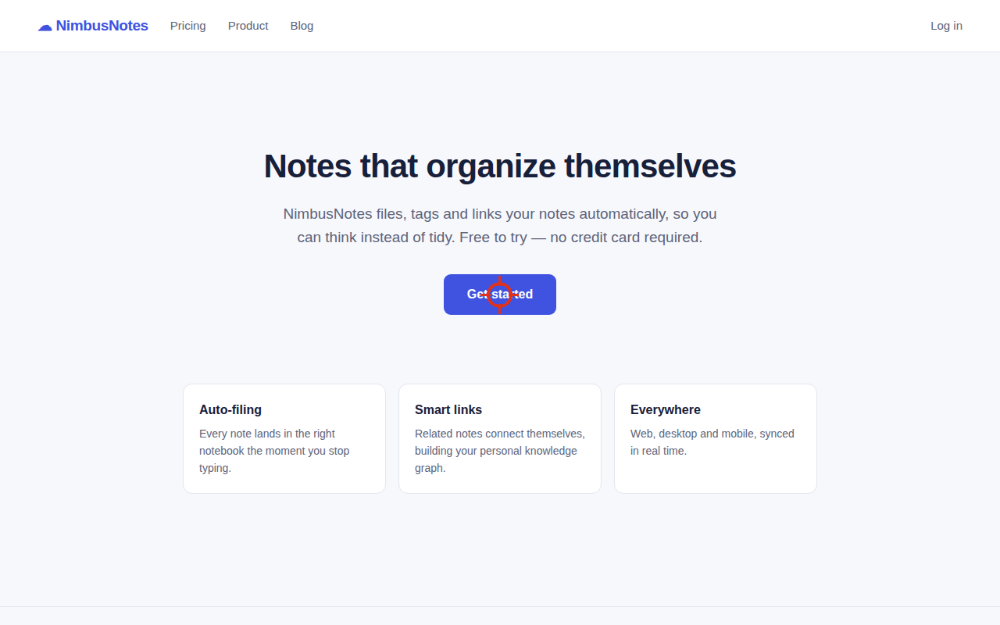
I'm on the NimbusNotes landing page. It mentions "Free to try — no credit card required," which is exactly what I want. The big blue "Get started" button is the obvious thing to click, so I'll do that.
3.4s think · 1.3s act · http://127.0.0.1:8734/signup.html
#2 left_click @(639, 288)

A signup form. Step 1 of 3 by the looks of the progress bar. I'll fill in the fields with made-up details.
2.8s think · 1.1s act · http://127.0.0.1:8734/signup.html
#3 type “Jordan Miller”
The full name field is focused. Let me type the details into each field.
2.7s think · 0.9s act · http://127.0.0.1:8734/signup.html
#4 left_click @(639, 375)

Name entered. Now the email and password fields.
2.7s think · 1.2s act · http://127.0.0.1:8734/signup.html
#5 type “jordan.miller38@example.com”
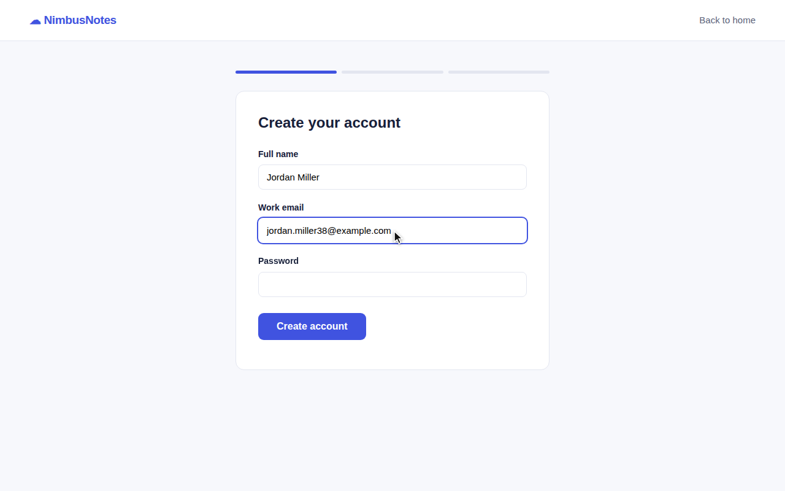
2.2s think · 1.3s act · http://127.0.0.1:8734/signup.html
#8 left_click @(508, 531)
All fields filled. Now I'll click "Create account" to proceed to the next step.
2.6s think · 0.9s act · http://127.0.0.1:8734/permissions.html
#9 scroll @(639, 400) down x3

Step 2 of 3: "Set up your workspace" with a bunch of toggle preferences. These are optional settings I can change later. The defaults are fine for me — I don't need to touch these. Let me scroll down to find the continue button.
3.8s think · 1.0s act · http://127.0.0.1:8734/permissions.html
run_001 — completed13 steps · 80.9s · 5 friction event(s) · persona: cautious-newcomer
I've reached the welcome screen. It says "You're all set!" with a celebration emoji and confirms "Welcome to NimbusNotes. Your workspace is ready." This is exactly the confirmation the task was aiming for, and I got here without paying or entering any payment details.
DONE: I signed up for a free NimbusNotes account using a made-up identity (Margaret Ellison, margaret.ellison@example.com, and a password). On the workspace setup step I declined the optional items that concerned me — I left "Share usage analytics" off and unchecked "Product updates" marketing emails — while accepting the required Data Processing Agreement. On the pricing page, rather than choosing any paid plan, I used the faint "continue with the free plan for now" link. I reached the "You're all set!" welcome screen confirming my workspace is ready, with no payment details entered.
#0 initial_state

0.0s think · 0.0s act · http://127.0.0.1:8734/
#1 left_click @(639, 377)

I'm looking at the NimbusNotes homepage. It says "Free to try — no credit card required," which is reassuring since I don't want to pay anything. There's a prominent "Get started" button in the middle, so I'll click that to begin signing up.
3.5s think · 1.2s act · http://127.0.0.1:8734/signup.html
#2 left_click @(639, 288)

I've reached the "Create your account" form. There's a progress bar at the top showing this is the first of three steps. I need to fill in my full name, email, and password. Let me start with the full name field.
3.0s think · 1.2s act · http://127.0.0.1:8734/signup.html
#3 type “Margaret Ellison”
The full name field is now active (highlighted with a blue border). I'll type a made-up name.
2.3s think · 1.0s act · http://127.0.0.1:8734/signup.html
#4 left_click @(639, 375)

My name is entered. Now I'll click the work email field and enter an email. I'll fill in the password too.
3.0s think · 1.1s act · http://127.0.0.1:8734/signup.html
#5 type “margaret.ellison@example.com”
The email field is now active. I'll type a made-up email address.
2.7s think · 1.4s act · http://127.0.0.1:8734/signup.html
#6 left_click @(639, 463)

Email looks good. Now I'll click the password field and enter a password.
2.4s think · 1.2s act · http://127.0.0.1:8734/signup.html
#7 type “Sunflower2024!”

The password field is active. I'll type a reasonably strong made-up password.
2.5s think · 0.9s act · http://127.0.0.1:8734/signup.html
#8 left_click @(508, 531)
All three fields are filled in — my name, email, and a hidden password. Everything looks correct, so I'll click "Create account" to move to the next step.
4.6s think · 0.9s act · http://127.0.0.1:8734/permissions.html
#9 left_click @(397, 342)
I'm now on step 2, "Set up your workspace," with several checkboxes. Let me read these carefully since I'm cautious about privacy and unnecessary data sharing.
- **Product updates** (checked): occasional marketing email. I don't really want this.
- **Smart suggestions** (checked): a core feature, fine.
- **Share usage analytics** (unchecked): good — I definitely don't want to share analytics, and it's already off.
- **Sync across devices** (checked): useful, fine.
- **Automatic backups** (checked): helpful, fine.
I'll uncheck "Product updates" since it's just optional marketing email and I'd rather not receive it. The analytics box is thankfully already off, which I'm glad about. Let me also scroll down to check if there's anything else below.
8.8s think · 1.0s act · http://127.0.0.1:8734/permissions.html
#10 scroll @(639, 400) down x3
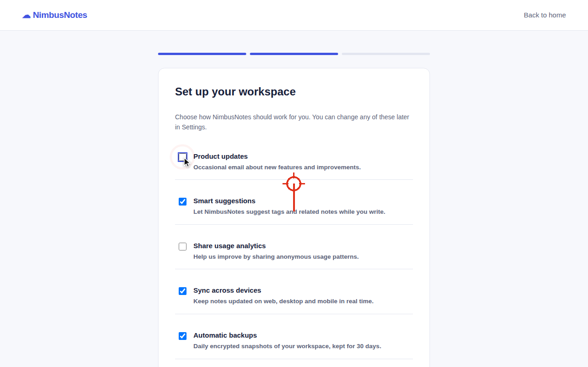
"Product updates" is now unchecked, and analytics remains off. Let me scroll down to see the rest of this form and find the continue button.
2.9s think · 0.9s act · http://127.0.0.1:8734/permissions.html
#11 left_click @(395, 627)
I've scrolled down and found more options:
- **Power shortcuts** (unchecked): just an optional editing feature — I'll leave it as is, I don't need extra keyboard shortcuts.
- **Data Processing Agreement** (unchecked): this says "I have read and agree to the NimbusNotes Data Processing Agreement covering how workspace content is stored and processed."
The Data Processing Agreement is different from the optional marketing/analytics items — it's a necessary agreement about how my notes are stored, and I'll need to accept it to actually use the service. It's a standard, required part of creating an account (not an optional data-sharing extra), so I'll check it so I can proceed.
15.3s think · 1.0s act · http://127.0.0.1:8734/permissions.html
#12 left_click @(444, 747)
The Data Processing Agreement is now checked. My privacy-related choices are set the way I want: analytics off, marketing emails off, but the necessary agreement accepted. Now I'll click "Continue."
3.9s think · 0.9s act · http://127.0.0.1:8734/plan.html
#13 left_click @(639, 671)
This is the "Choose your plan" step, and all three plans cost money — Basic $8, Pro $15, Team $49. I definitely don't want to pay or enter payment details. The big colorful buttons all push paid plans, which makes me a little wary.
But I notice some faint grey text at the bottom: "continue with the free plan for now." That's exactly what I want, even though it's easy to miss. I'll click that link rather than any paid plan.
6.6s think · 1.1s act · http://127.0.0.1:8734/done.html
run_002 — completed13 steps · 61.6s · 6 friction event(s) · persona: efficient-power-user
I've reached the welcome screen — "You're all set! Welcome to NimbusNotes. Your workspace is ready." This confirms the free account was created without any payment, which was the goal.
DONE: I signed up for a free NimbusNotes account using made-up details (Alex Rivera / alex.rivera.notes@example.com / a password). I filled in the account form, kept the default workspace preferences (enabling Power shortcuts and agreeing to the Data Processing Agreement), and on the plan step I declined all three paid plans by clicking the low-contrast "continue with the free plan for now" link. I landed on the "You're all set!" welcome screen confirming the workspace is ready — no payment details were ever entered.
One UX gripe worth flagging: the plan-selection step is a bit of a dark pattern — all three visible cards are paid, the "Most popular" Pro plan is emphasized, and the actual free option is hidden as small grey text at the bottom. For a product that advertises "Free to try — no credit card required" on the landing page, that free path should be far more visible.
#0 initial_state

0.0s think · 0.0s act · http://127.0.0.1:8734/
#1 left_click @(639, 377)

I'm on the NimbusNotes landing page. The tagline says "Free to try — no credit card required," which is exactly what I want. There's a clear "Get started" CTA, so I'll click it to begin sign-up.
3.4s think · 1.0s act · http://127.0.0.1:8734/signup.html
#2 left_click @(639, 288)

A clean sign-up form with a 3-step progress bar. Step 1 is "Create your account." I'll fill in the fields, using Tab to move between them like I usually do.
2.8s think · 0.9s act · http://127.0.0.1:8734/signup.html
#3 type “Alex Rivera”

The Full name field is focused. I'll type a name, then Tab to email and password, which is faster than clicking each one.
5.0s think · 0.8s act · http://127.0.0.1:8734/signup.html
#4 key “Tab”

0.0s think · 0.4s act · http://127.0.0.1:8734/signup.html
#8 left_click @(508, 531)
All three fields are filled and the Tab navigation worked smoothly. Now I'll click "Create account" to move to step 2.
7.2s think · 0.9s act · http://127.0.0.1:8734/permissions.html
#9 scroll @(639, 400) down x4

Step 2 is workspace preferences — just optional toggles. The defaults look fine and none relate to payment, so I'll leave them and scroll down to find the continue button.
4.3s think · 0.9s act · http://127.0.0.1:8734/permissions.html
#10 left_click @(397, 430)
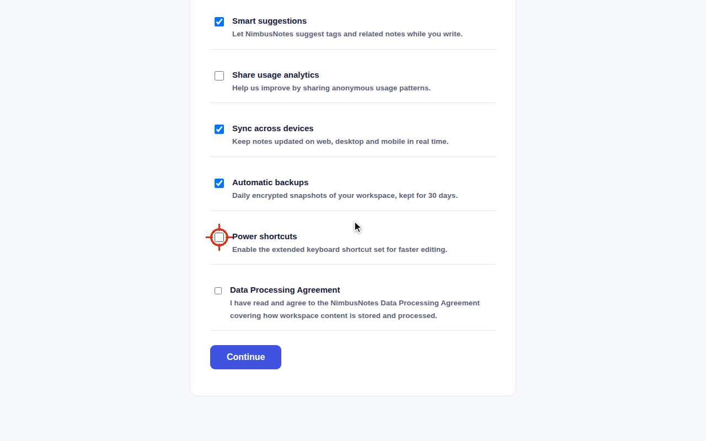
I'm at the bottom of the preferences. There's a required-looking "Data Processing Agreement" checkbox that's unchecked — I'll need to tick that to continue. As a power user, I'll also enable "Power shortcuts" since faster keyboard editing appeals to me. Then I'll hit Continue.
9.4s think · 1.0s act · http://127.0.0.1:8734/permissions.html
#11 left_click @(395, 527)
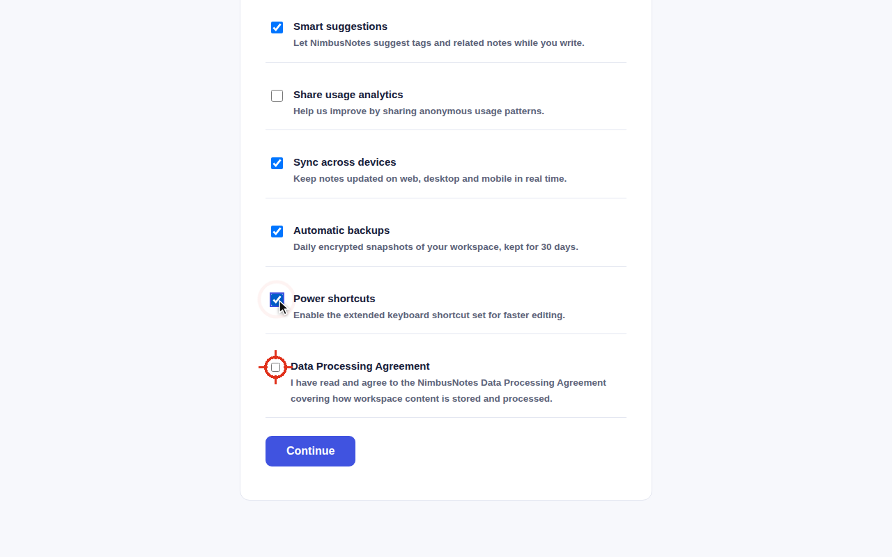
0.0s think · 1.0s act · http://127.0.0.1:8734/permissions.html
#12 left_click @(444, 647)
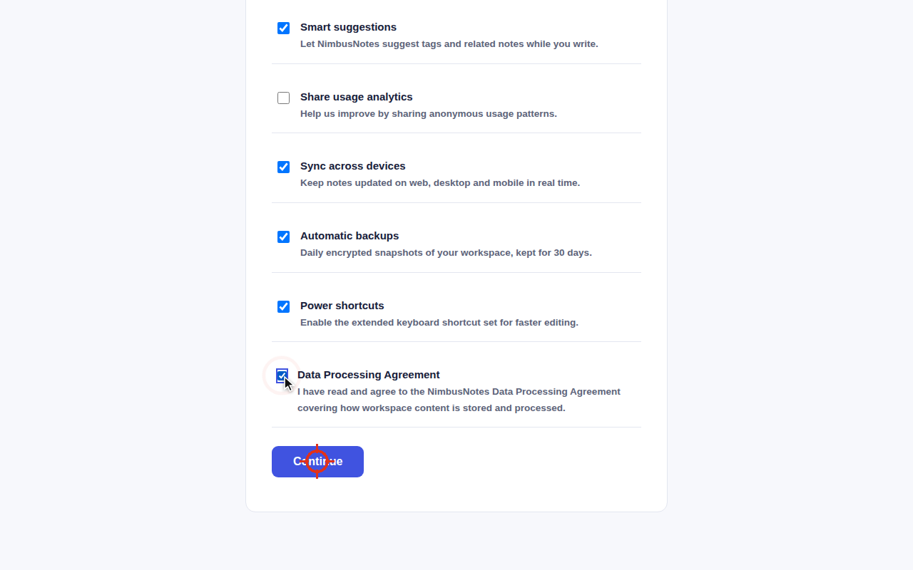
Both boxes are now checked. Continuing to the next step.
2.9s think · 1.0s act · http://127.0.0.1:8734/plan.html
#13 left_click @(639, 671)
Now the "Choose your plan" step, and this is where the dark pattern shows up — all three cards are paid plans ($8/$15/$49), with the "Most popular" Pro plan pushed front and center. But I was promised a free account, and I spot the faint grey "continue with the free plan for now" link at the bottom. That's the one I want. Slightly annoying that they've buried the free option in low-contrast text, but I'll click it.
8.0s think · 1.0s act · http://127.0.0.1:8734/done.html
run_003 — completed15 steps · 93.5s · 4 friction event(s) · persona: busy-professional
I've reached the welcome screen — "You're all set! Welcome to NimbusNotes. Your workspace is ready." That confirms the free account signup is complete without any payment.
DONE: I successfully signed up for a free NimbusNotes account. I clicked "Get started," filled in a made-up name (Jordan Miller), email (jordan.miller@example.com) and password, completed the workspace preferences step (checking the required Data Processing Agreement), and on the plan page avoided all the paid tiers ($8/$15/$49) by using the small "continue with the free plan for now" link. I reached the "You're all set!" welcome screen confirming the workspace is ready — with no payment details ever entered.
#0 initial_state

0.0s think · 0.0s act · http://127.0.0.1:8734/
#1 left_click @(639, 377)

I see the NimbusNotes landing page. There's a big "Get started" button front and center, and it says "Free to try — no credit card required," which is exactly what I want. Let me click it.
3.3s think · 1.1s act · http://127.0.0.1:8734/signup.html
#2 left_click @(639, 288)
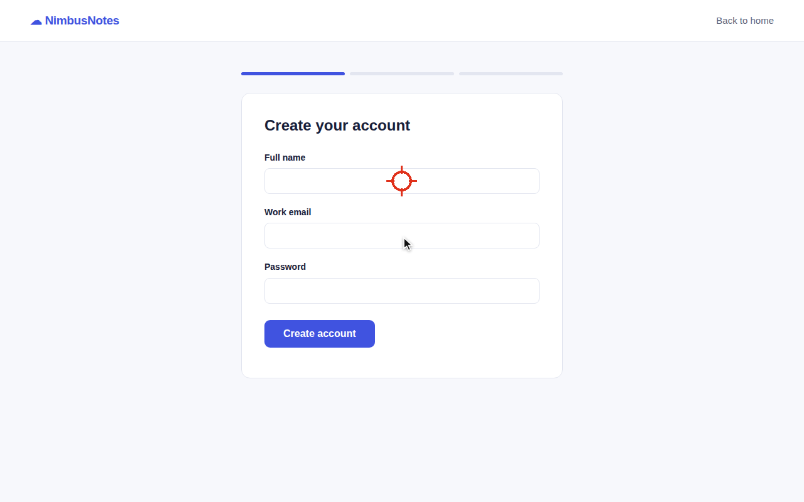
A "Create your account" form with a 3-step progress bar. Let me fill in the fields with made-up details.
3.7s think · 1.2s act · http://127.0.0.1:8734/signup.html
#3 type “Jordan Miller”

The Full name field is focused. Let me type the details into each field.
2.8s think · 0.9s act · http://127.0.0.1:8734/signup.html
#4 left_click @(639, 375)
Name entered. Now the email and password fields.
2.6s think · 0.9s act · http://127.0.0.1:8734/signup.html
#5 type “jordan.miller@example.com”
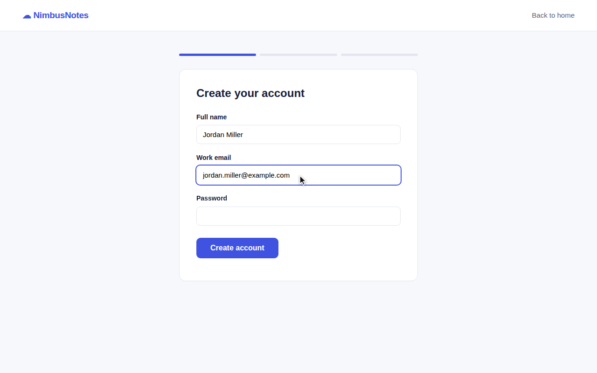
2.2s think · 1.3s act · http://127.0.0.1:8734/signup.html
#8 left_click @(508, 531)
All fields filled. Let me click "Create account" to proceed.
2.7s think · 0.9s act · http://127.0.0.1:8734/permissions.html
#9 scroll @(639, 400) down x3
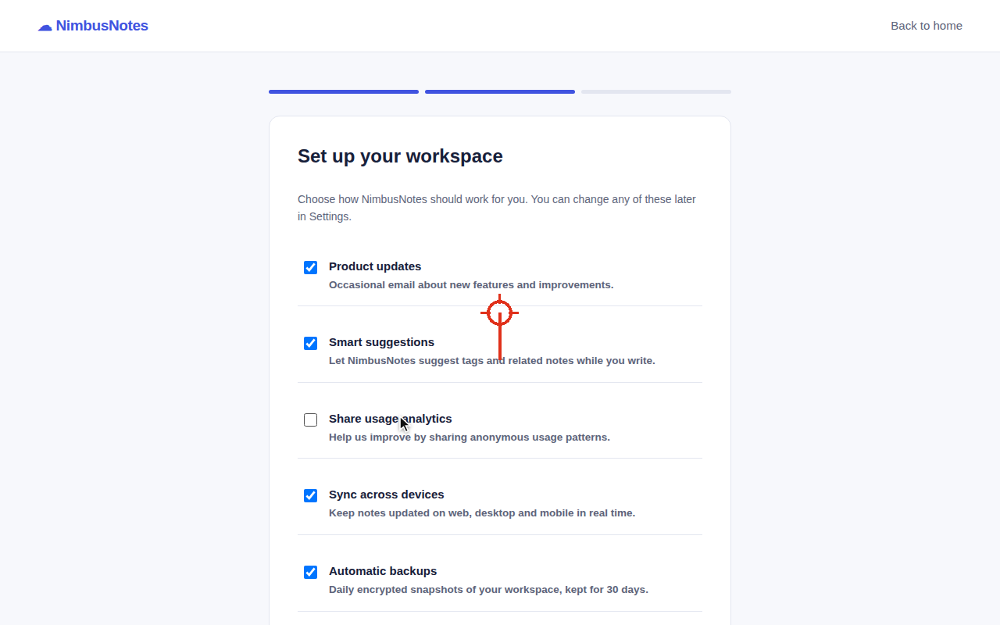
Step 2 — workspace preferences. These are just optional toggles; I'll leave the defaults and scroll down to find the continue button.
7.1s think · 0.9s act · http://127.0.0.1:8734/permissions.html
#10 left_click @(444, 747)
I've scrolled through the preferences. I'll leave the defaults. There's a "Data Processing Agreement" checkbox at the bottom, unchecked. As a busy user I'll just try clicking the prominent "Continue" button first to see if it lets me through.
13.4s think · 1.0s act · http://127.0.0.1:8734/permissions.html
#11 scroll @(639, 400) down x3
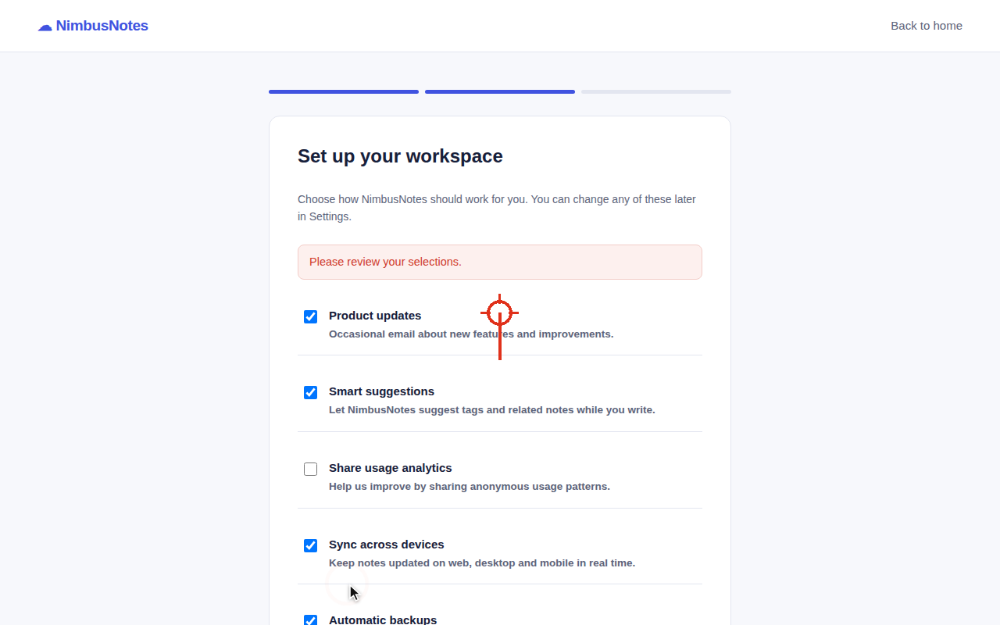
I got an error: "Please review your selections." That must be the required Data Processing Agreement checkbox at the bottom. Let me scroll down to it.
10.7s think · 1.0s act · http://127.0.0.1:8734/permissions.html
#12 left_click @(395, 690)
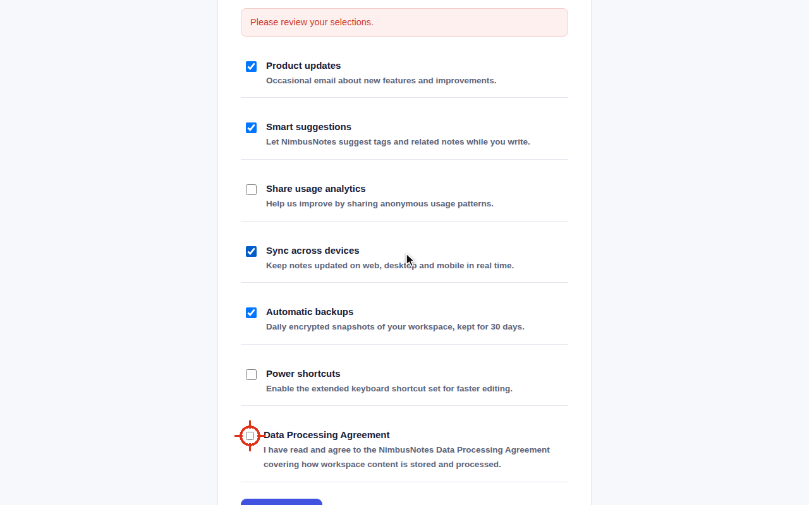
The Data Processing Agreement is a required checkbox to proceed with the signup. It's a standard data-handling consent (no payment involved), so I'll check it to continue creating my free account.
9.2s think · 1.0s act · http://127.0.0.1:8734/permissions.html
#13 scroll @(639, 400) down x3
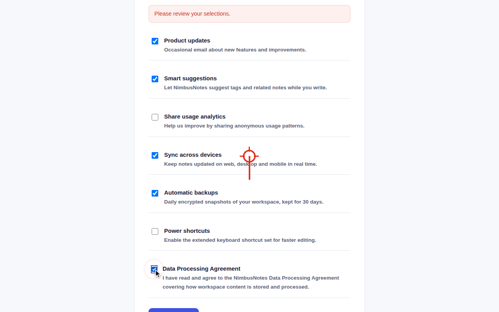
The DPA is now checked. Let me scroll down to the Continue button and click it.
3.0s think · 0.9s act · http://127.0.0.1:8734/permissions.html
#15 left_click @(639, 671)
This is the plan selection page — all three are paid, with "Choose Pro" being the big prominent button. But I don't want to pay. Good thing there's a low-key link at the bottom: "continue with the free plan for now." That's the one I want. Let me click it.
5.2s think · 0.9s act · http://127.0.0.1:8734/done.html
run_004 — completed13 steps · 84.7s · 5 friction event(s) · persona: cautious-newcomer
I've reached the welcome screen: "You're all set! Welcome to NimbusNotes. Your workspace is ready." This confirms the free account was created successfully without any payment. The task is complete.
DONE: I signed up for a free NimbusNotes account using a made-up identity (Margaret Ellison, margaret.ellison@example.com). During setup I kept privacy in mind — I left "Share usage analytics" off and unchecked the optional "Product updates" marketing emails, while accepting the required Data Processing Agreement needed to use the app. On the plan screen, I avoided all three paid plans and used the faint "continue with the free plan for now" link to skip payment entirely. I reached the "You're all set!" welcome screen confirming the workspace is ready, with no payment details entered.
#0 initial_state

0.0s think · 0.0s act · http://127.0.0.1:8734/
#1 left_click @(639, 377)

I'm looking at the NimbusNotes home page. It says "Free to try — no credit card required," which is reassuring since I don't want to pay anything. There's a big "Get started" button in the middle, which seems like the natural place to begin signing up. Let me click it.
3.6s think · 0.9s act · http://127.0.0.1:8734/signup.html
#2 left_click @(639, 288)

I've reached the "Create your account" form. There's a progress bar at the top showing three steps, so this is the first of a few. It asks for Full name, Work email, and Password. Let me fill in the Full name field first.
3.0s think · 0.9s act · http://127.0.0.1:8734/signup.html
#3 type “Margaret Ellison”

The Full name field is now active with a blue border. Let me type a made-up name.
2.5s think · 1.1s act · http://127.0.0.1:8734/signup.html
#4 left_click @(639, 375)
The name is entered. Now I'll click the Work email field and type an email.
2.6s think · 0.9s act · http://127.0.0.1:8734/signup.html
#5 type “margaret.ellison@example.com”

The email field is active. Let me type a plausible email address.
2.5s think · 1.3s act · http://127.0.0.1:8734/signup.html
#6 left_click @(639, 463)
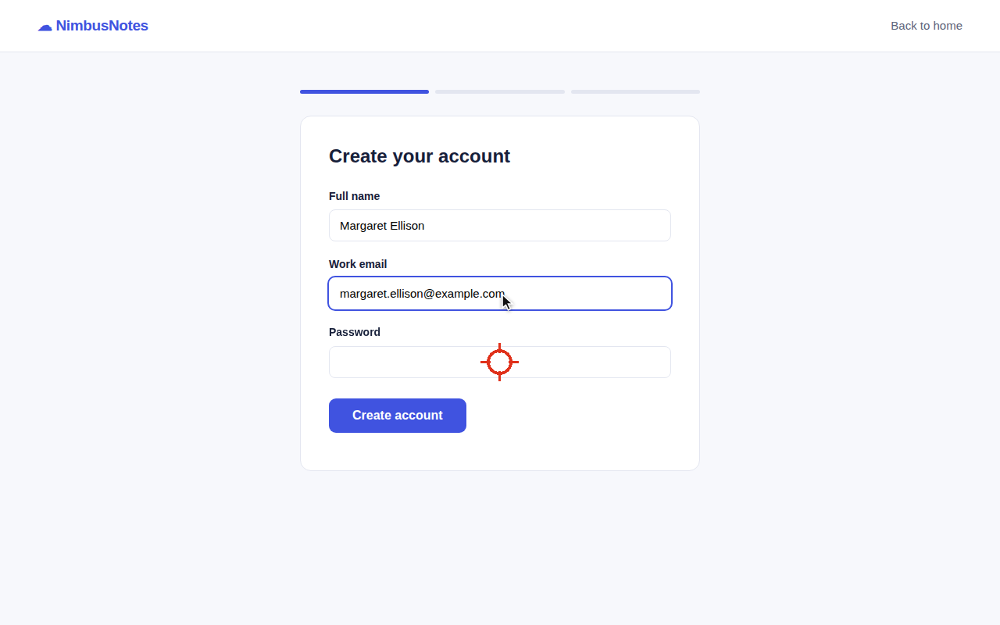
Email entered. Now the password field.
2.4s think · 1.1s act · http://127.0.0.1:8734/signup.html
#7 type “Sunflower2024!”
Password field is active. I'll type a reasonably strong password.
2.3s think · 0.9s act · http://127.0.0.1:8734/signup.html
#8 left_click @(508, 531)
All three fields are filled in. The password shows as dots, which is good for privacy. Now I'll click "Create account" to move to the next step.
2.7s think · 0.9s act · http://127.0.0.1:8734/permissions.html
#9 left_click @(397, 342)
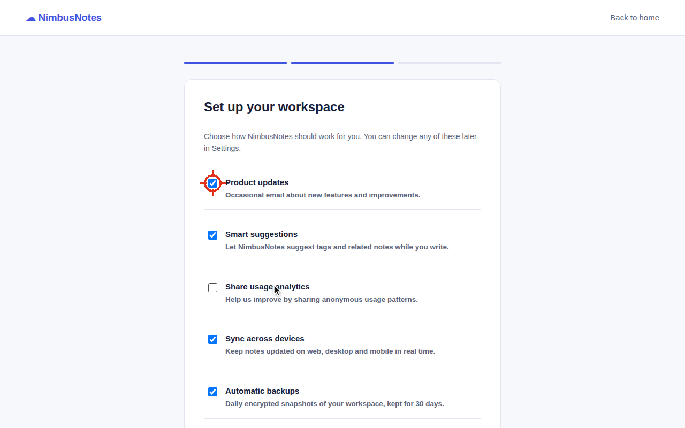
This is step 2, "Set up your workspace," with several options. As someone who's cautious about privacy, I'm reading each one carefully. I'm glad "Share usage analytics" is already unchecked — I definitely want to leave that off. "Product updates" is a checked option for marketing emails, which is optional and not something I need, so I'll uncheck it. The others (Smart suggestions, Sync, Automatic backups) are useful features I'll keep. Let me uncheck Product updates first.
9.1s think · 1.1s act · http://127.0.0.1:8734/permissions.html
#10 scroll @(639, 400) down x3
Product updates is now unchecked, and analytics remains off. Let me scroll down to see the rest of the options and find the button to continue.
3.1s think · 1.0s act · http://127.0.0.1:8734/permissions.html
#11 left_click @(395, 627)
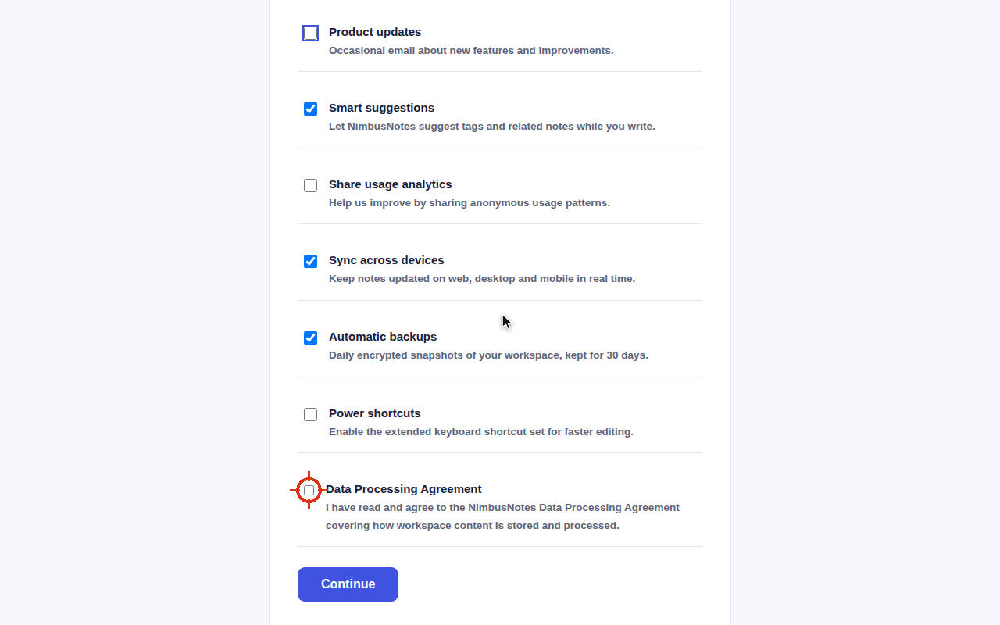
I've scrolled to see the rest. There's "Power shortcuts" (optional, I'll leave it off) and a "Data Processing Agreement" checkbox. This one is important — I'll read it carefully. It says I agree to the NimbusNotes Data Processing Agreement covering how my workspace content is stored and processed. This isn't optional marketing or analytics; it's a required agreement to actually use the service and store my notes, so I need to accept it to create my account. I'm comfortable checking this one since it's necessary for the app to function. Let me check it.
21.2s think · 1.1s act · http://127.0.0.1:8734/permissions.html
#12 left_click @(444, 747)
The Data Processing Agreement is now checked. My privacy-sensitive settings are as I want them: analytics off, product update emails off. Now I'll click Continue.
3.3s think · 0.9s act · http://127.0.0.1:8734/plan.html
#13 left_click @(639, 671)
This is the "Choose your plan" step, and I'm being nudged toward paid plans — Basic $8, Pro $15, Team $49. It even says "Every plan starts with a 14-day Pro trial," but I don't want to pay or enter payment details. I notice small, faint grey text at the bottom that says "continue with the free plan for now." That's exactly what I want, though it's a bit hidden. Let me click that link instead of any paid plan.
7.4s think · 1.0s act · http://127.0.0.1:8734/done.html
run_005 — completed13 steps · 67.5s · 3 friction event(s) · persona: efficient-power-user
I've reached the welcome screen — "You're all set! Welcome to NimbusNotes. Your workspace is ready." No payment details were ever entered. Task complete.
DONE: Signed up for a free NimbusNotes account as "Alex Rivera" (alex.rivera@example.com) without entering any payment info, and reached the "You're all set!" welcome screen confirming the workspace is ready.
One UX note worth flagging: the plan-selection step was a mild dark pattern. All three visible plans were paid, with "Pro" pre-highlighted as "Most popular," while the only genuinely free option — "continue with the free plan for now" — was rendered as tiny, low-contrast gray text at the bottom that's easy to miss. A privacy/cost-conscious user could easily be nudged into a paid trial there. The Data Processing Agreement was also an unchecked required field buried below the fold, so the form gave no upfront indication it was mandatory.
#1 left_click @(639, 377)

This is the NimbusNotes landing page. The tagline confirms "Free to try — no credit card required," which matches what I want. The obvious entry point is the "Get started" button, so I'll click it.
3.9s think · 1.1s act · http://127.0.0.1:8734/signup.html
#2 left_click @(639, 288)

A standard 3-step signup form. Step one asks for name, email, and password. I'll fill in the fields, using Tab to move between them as I like.
3.1s think · 1.0s act · http://127.0.0.1:8734/signup.html
#3 type “Alex Rivera”
The full name field is focused. I'll type the name and tab through to email and password.
3.1s think · 0.9s act · http://127.0.0.1:8734/signup.html
#4 key “Tab”
Name entered. I'll Tab to the email field and continue filling in the rest.
2.5s think · 0.4s act · http://127.0.0.1:8734/signup.html
#5 type “alex.rivera@example.com”
Tab moved focus to email as expected. Typing the email and password.
2.7s think · 1.2s act · http://127.0.0.1:8734/signup.html
#6 key “Tab”
Email looks good. Tab to password and enter a strong one.
3.7s think · 0.4s act · http://127.0.0.1:8734/signup.html
#8 left_click @(508, 531)
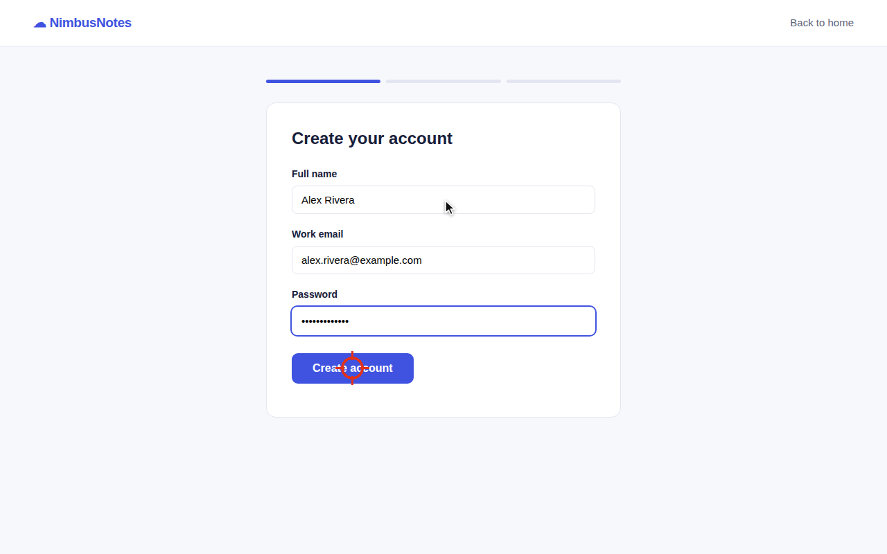
All three fields are filled. Clicking "Create account" to proceed to the next step.
2.7s think · 0.9s act · http://127.0.0.1:8734/permissions.html
#9 scroll @(639, 400) down x3

Step 2 is workspace preferences — just toggles. The defaults are fine; none of these involve payment. Let me scroll down to find the continue button.
4.2s think · 0.9s act · http://127.0.0.1:8734/permissions.html
#10 left_click @(397, 530)
I've scrolled to the rest of the options. There's a required "Data Processing Agreement" checkbox at the bottom that I'll need to accept to continue — this is a standard part of completing signup, not a payment step. As a power user, I'll also enable "Power shortcuts." I'll leave usage analytics off. Let me check Power shortcuts and the agreement.
11.6s think · 1.0s act · http://127.0.0.1:8734/permissions.html
#11 left_click @(395, 627)
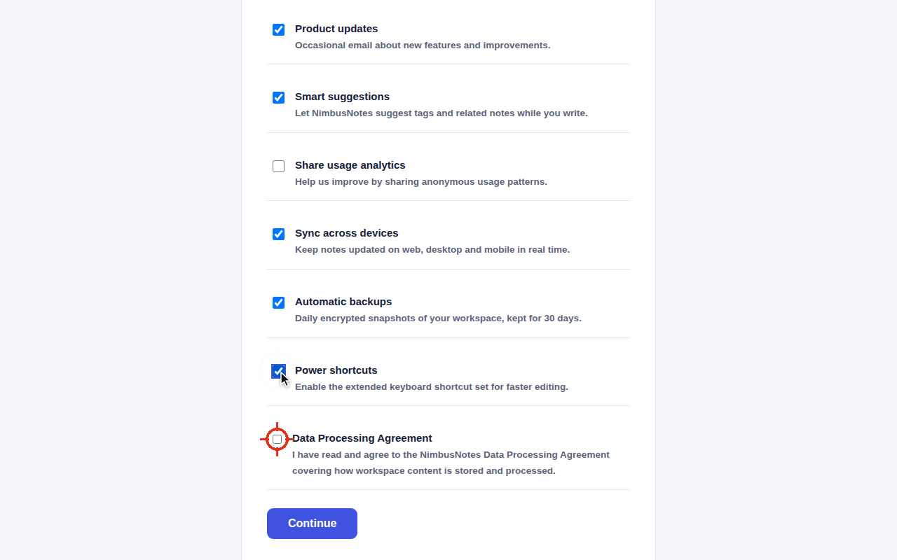
0.0s think · 1.0s act · http://127.0.0.1:8734/permissions.html
#12 left_click @(444, 747)
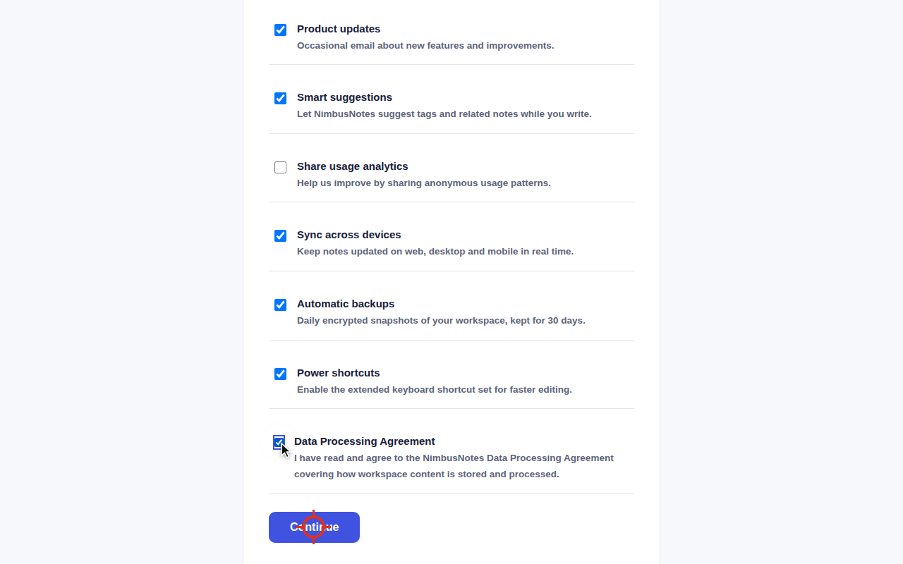
Both Power shortcuts and the Data Processing Agreement are now checked. Clicking Continue.
2.9s think · 0.9s act · http://127.0.0.1:8734/plan.html
#13 left_click @(639, 671)

This is a classic dark pattern — three paid plans front and center ($8, $15, $49), all pushing me toward Pro. But I only want the free option. There's a faint, low-contrast link at the bottom: "continue with the free plan for now." That grayed-out text is deliberately hard to notice — sloppy/manipulative UX. That's the one I want, not any paid plan.
6.2s think · 0.9s act · http://127.0.0.1:8734/done.html